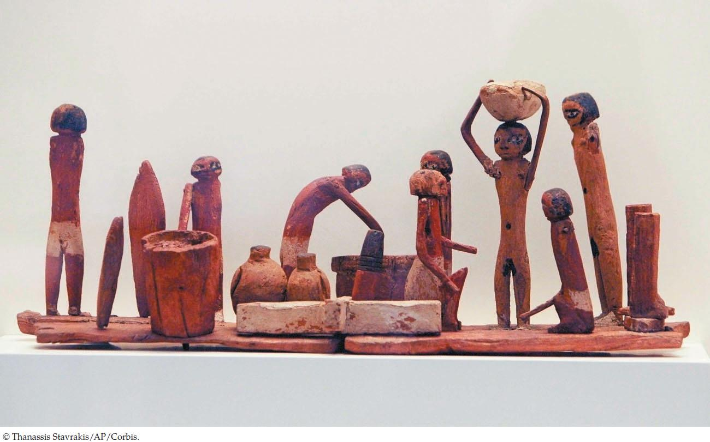

| 6 | Pathways that Harvest and Store Chemical Energy |
|
KEY CONCEPTS
6.1 ATP and Reduced Coenzymes Play Important Roles in Biological Energy Metabolism 6.2 Carbohydrate Catabolism in the Presence of Oxygen Releases a Large Amount of Energy 6.3 Carbohydrate Catabolism in the Absence of Oxygen Releases a Small Amount of Energy 6.4 Catabolic and Anabolic Pathways Are Integrated 6.5 During Photosynthesis, Light Energy Is Converted to Chemical Energy 6.6 Photosynthetic Organisms Use Chemical Energy to Convert CO₂ to Carbohydrates |

An Old Brew Carvings from more than 4,000 years ago in ancient Egypt show barley being crushed and mixed with water (left), then put into closed vessels (center) where airless conditions are suitable for the production of alcohol by yeast cells residing on the vessels’ walls. The beer is then ready for consumption (right).
|
Agriculture was a key invention in the development of human civilizations. The planting and harvesting of seeds began about 10,000 years ago. One of the first plants to be turned into a reliable crop was barley, and one of the first uses of barley was to brew beer. Living in what is now Iraq, ancient Sumerians learned that partly germinated and then mashed-up barley seeds, stored under the right conditions, could produce a potent and pleasant drink. An ancient king, Hammurabi, laid down the oldest known laws regarding an alcoholic beverage: the daily beer ration was 2 liters for a normal worker, 3 liters for a civil servant, and 5 liters for a high priest. Alcoholic beverages were not just a diversion to these people; their health depended on them. Drinking water from rivers and ponds caused diseases, and whatever caused these diseases was not present in liquids containing alcohol.
Early chemists and biologists were interested in how mashed barley seeds (or grapes, in the case of wine) were transformed into alcoholic beverages. By the nineteenth century there were two theories. Chemists claimed that these transformations were simply chemical reactions, not some special property of the plant material. Biologists, armed with their microscopes and cell theory (see Chapter 4), said that the barley and grape extracts were converted to beer and wine by living cells.
The great French scientist Louis Pasteur tackled the question in the 1860s, responding to a challenge posed by a group of distillers who wanted to use sugar beets to produce alcohol. Pasteur found that (1) nothing happened to beet mash unless microscopic yeast cells were present; (2) in the presence of fresh air, yeast cells grew vigorously on the mash, and bubbles of CO2 were formed; and (3) without fresh air, the yeast grew slowly, less CO2 was produced, and alcohol was formed. So the biologists were right: living cells produced alcohol from ground-up, sugary extracts. Later, biochemists broke open yeast cells and unraveled the sequence of chemical transformations from sugar to alcohol. It turned out that the chemists were right too: the production of alcohol involves a series of chemical reactions that require energy transfers. The flow of energy in living systems (such as yeast cells) involves the same chemical principles as energy flow in the inanimate world.
Why does fresh air inhibit the formation of alcohol by yeast cells?